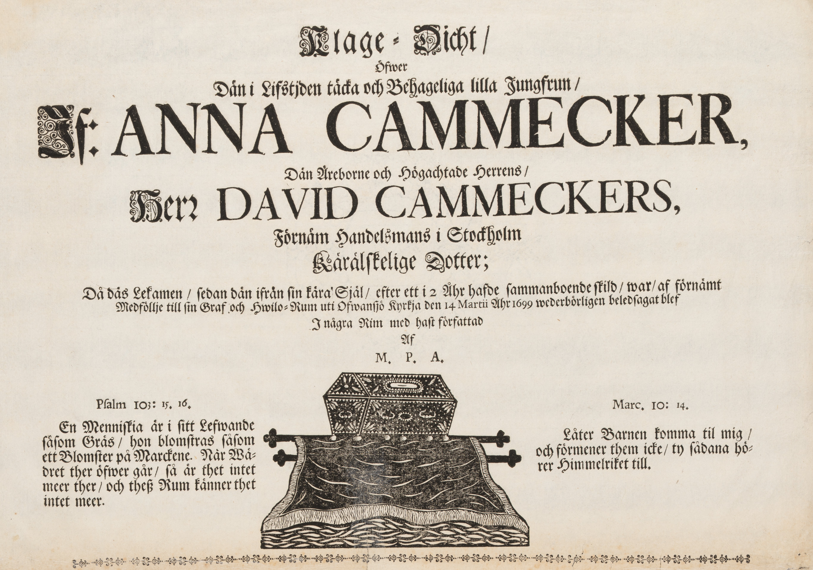
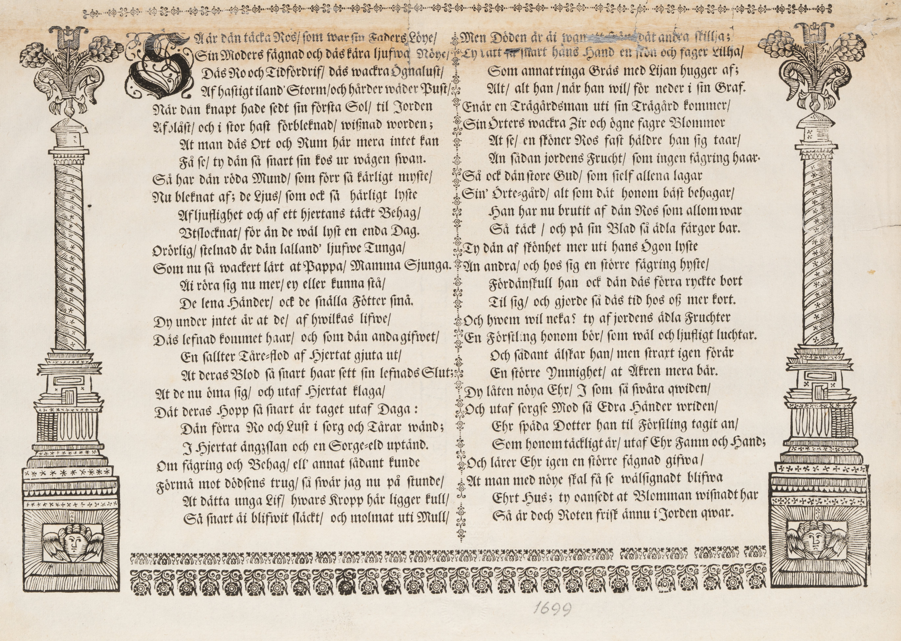

| Faksimil | Text | |||
|---|---|---|---|---|
 |
Klage-Dicht /
|
{kind=link}
|
Pſalm 103: 15. 16.
En Menniſkia är i sitt Lefwande ſåſom Gräs / hon blomſtras ſåſom ett Blomſter på Marckene. När Wä- dret ther öfwer går / så är thet intet meer ther / och theß Rum känner thet intet meer. |
(En bild av en liten barnkista.) |
Marc. 10: 14.
Låter Barnen komma til mig / och förmener them icke / ty sådana hö- rer Himmelriket till. |
{kind=link}

|
SÅ är dän täcka Ros / ſom war sin Faders Löye /
Sin Moders fägnad och däs kära ljufwa Nöye /
Däs Ro och Tidfördrif / däs wackra Ögnalust /
Af haſtigt iland' Storm / och hårder wäder Puſt /
När dän knapt hade ſedt sin förſta Sol / til Jorden
Afblåſt / och i stor haſt förbleknad / wißnad worden;
At man däs Ort och Rum här mera intet kan
Få ſe / ty dän ſå ſnart ſin kos ur vägen ſwan.
Så har dän röda Mund / ſom förr ſå kärligt myſte /
Nu bleknat af; de Ljus / som ock så härligt lyſte
Af ljuflighet och af ett hjertans täckt Behag /
Utslocknat / för än de wäl lyſt en enda Dag.
Orörlig / ſtelnad är dän lalland' ljufwe Tunga /
Som nu ſå wackert lärt at Pappa / Mamma Sjunga.
Äi röra ſig nu mer / ey eller kunna ſtå /
De lena Händer / ock de ſnälla Fötter ſmå.
Dy under jntet är at de / af hwilkas lifwe /
Däs lefnad kommet haar / och som dän anda gifwet /
En ſallter Tåre-flod af Hiertat gjuta ut /
At deras Blod ſå ſnart haar ſett ſin lefnads Slut;
At de nu öma sig / och utaf Hjertat klaga /
Där deras Hopp ſå ſnart är taget utaf Daga:
Dän förra Ro och Lust i ſorg och Tårar wänd;
J Hjertat ängʒlan och en Sorge-eld uptänd.
Om fägring och Behag / ell' annat ſådant kunde
Förmå mot dödſens trug / ſå ſwär jag nu på ſtunde /
At dätta unga Lif / hwars Kropp här ligger kull /
Så snart äi blifwit ſläckt / och molmat uti Mull /
|
Men Döden är äi wan ett från dät andra ſkillja;
Ty rätt så snart hans Hand en ſkön och fager Lillja /
Som annat ringa Gräs med Lijan hugger af;
Alt / alt han / när han wil / för neder i sin Graf.
Enär en Trägårdsman uti sin Trägård kommer /
Sin Örters wackra Ʒir och ögne fagre Blommor
At ſe / en ſköner Ros fast häldre han ſig taar /
Än ſådan jordens Frucht / som ingen fägring haar.
Så ock dän ſtore Gud / som ſielf allena lagar
Sin Örte-gård / alt ſom dät honom bäſt behagar /
Han har nu brutit af dän Ros som allom war
Så täck / och på ſin Blad ſå ädla färgor bar.
Ty dän af ſkönhet mer uti hans Ögon lyſte
Än andra / och hos ſig en ſtörre fägring hyſte /
Fördänſkull han ock dän däs förra ryckte bort
Til ſig / och gjorde ſå däs tid hos oß mer kort.
Och hwem wil neka? ty af jordens ädla Fruchter
En Förſtling honom bör /som wäl och ljufligt luchtar.
Och sådant älſkar han / men straxt igen förär
En större Ymnighet / at Åkren mera bär.
Dy låten nöya Ehr / J som ſå swåra qwiden /
Och utaf ſorgſe Mod ſå Edra Händer wriden /
Ehr ſpäda Dotter han til Förſtling tagit an /
Som honom täckligt är / utaf Ehr Famn och Hand;
Och lärer Ehr igen en ſtörre fägnad gifwa /
At man med nöye ſkal få se wälſignadt blifwa
Ehrt Hus; ty oansedt at Blomman wiſnadt har
Så är doch Roten friſk ännu i Jorden qwar.
|
(Texten är dekorativt omgärdad på alla sidor. En tunn linje med dekorativa mönster finns ovanför och mellan spalterna; en tjockare mönstrad linje finns under dem, och till höger och vänster om texten är utritade pelare, krönta med blommor och med ett änglaansikte på fundamentet.)
1699
17999354102